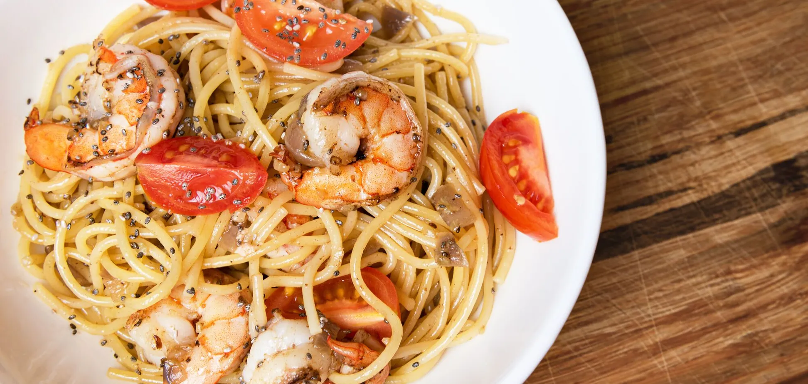
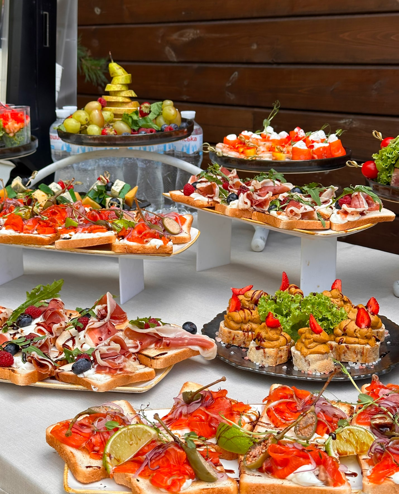
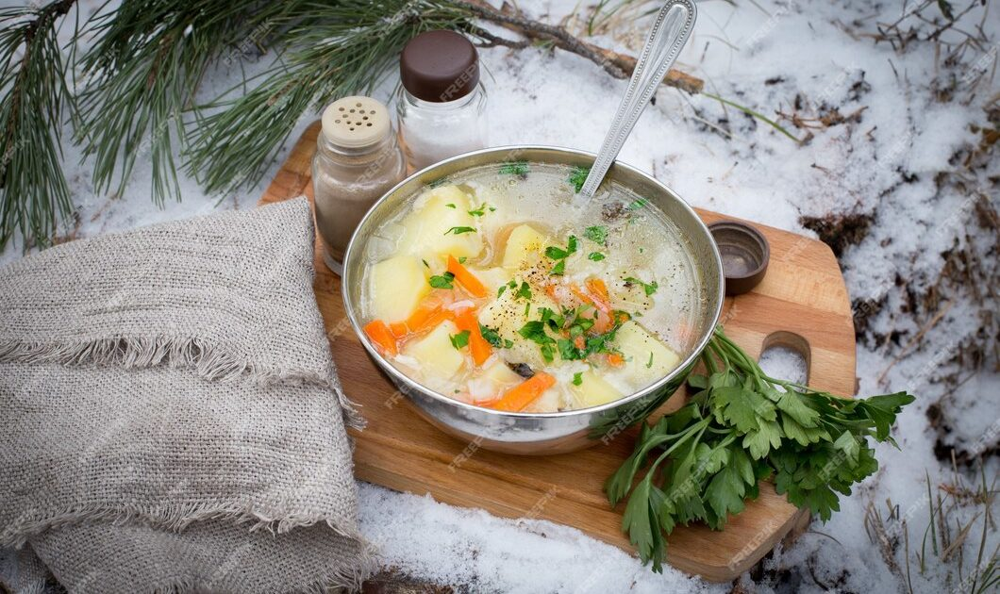

РЕЦЕПТ ДНЯ
Середземноморська паста з креветками
Насичений смак пасти з соковитими креветками, помідорами чері та ароматним базиліком. Ідеальний вибір для романтичної вечері.
Вегетаріанські страви
Будда-боул
Збалансована страва з зернових, овочів і білка
Грецький салат
Класичний середземноморський салат з фетою
Кіноа з овочами
Поживний салат з кіноа та свіжими овочами
Овочеве рагу
Ароматне рагу з сезонних овочів
Пасти
Паста Карбонара
Класична італійська паста з беконом та сиром
Спагетті Болоньєзе
Спагетті з ароматним м'ясним соусом
Пенне Арабіата
Гостра паста в томатному соусі з часником
Фетучіні Альфредо
Паста у вершковому соусі з пармезаном
Десерти
Тірамісу
Класичний італійський десерт з кавою
Чізкейк
Ніжний десерт з крем-сиром та ягодами
Шоколадний фондан
Десерт з рідкою шоколадною начинкою
Яблучний штрудель
Віденський десерт з яблуками та корицею
Категорії та сезони

Весняні страви

Літні страви
Осінні страви
